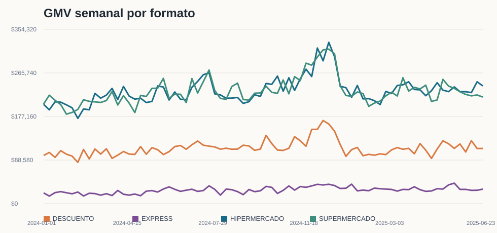
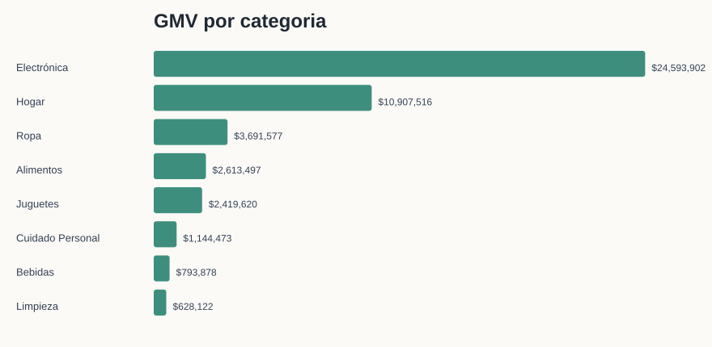
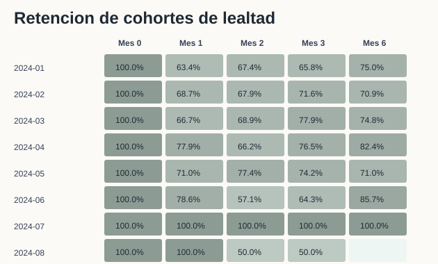
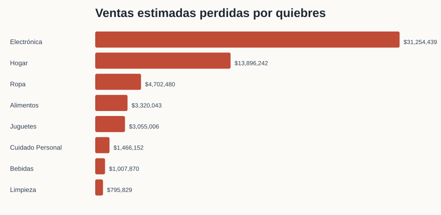
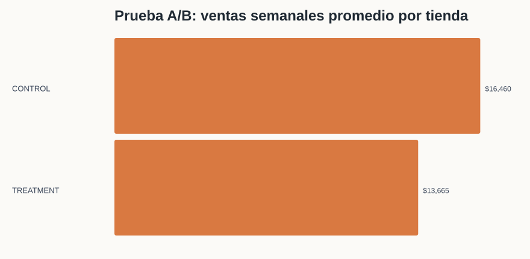

Bloque 3 - Analisis Exploratorio + Experimentacion
Datos sinteticos de retail multiformato, enero 2024 a junio 2025. Las ventas netas restan devoluciones; la prueba A/B usa solo ventas completadas.
Parte A - Analisis Exploratorio
1. Estacionalidad por formato

El formato mas sensible es EXPRESS, con coeficiente de variacion 0.23. Los picos principales se concentran alrededor de semanas comerciales fuertes; las caidas grandes se explican por cierres de ciclo/promocion o semanas posteriores a picos.
| week_start | format | net_gmv | wow_abs | wow_pct |
|---|---|---|---|---|
| 2024-12-02 | HIPERMERCADO | 316440.03 | 57997.25 | 22.44 |
| 2024-07-01 | SUPERMERCADO | 254202.85 | 48734.77 | 23.72 |
| 2025-05-05 | SUPERMERCADO | 252659.16 | 41832.01 | 19.84 |
Caidas mas significativas:
| week_start | format | net_gmv | wow_abs | wow_pct |
|---|---|---|---|---|
| 2024-12-30 | SUPERMERCADO | 239458.72 | -65412.65 | -21.46 |
| 2024-12-30 | HIPERMERCADO | 238755.95 | -60147.70 | -20.12 |
| 2024-07-29 | HIPERMERCADO | 223186.14 | -43017.31 | -16.16 |
2. Pareto de categorias por formato

En todos los formatos, Electronica y Hogar explican alrededor de 76% de las ventas netas. El patron de HIPERMERCADO y DESCUENTO es muy parecido: no cambia tanto la mezcla lider, sino la productividad y escala por tienda. Esto sugiere que el comprador de descuento tambien esta usando el formato para compras de alto valor.
| format | category | share | cum_share |
|---|---|---|---|
| DESCUENTO | Electrónica | 52.4 | 52.4 |
| DESCUENTO | Hogar | 23.2 | 75.6 |
| DESCUENTO | Ropa | 8.0 | 83.6 |
| EXPRESS | Electrónica | 52.1 | 52.1 |
| EXPRESS | Hogar | 24.0 | 76.0 |
| EXPRESS | Ropa | 7.6 | 83.6 |
| HIPERMERCADO | Electrónica | 52.7 | 52.7 |
| HIPERMERCADO | Hogar | 23.2 | 75.9 |
| HIPERMERCADO | Ropa | 7.9 | 83.8 |
| SUPERMERCADO | Electrónica | 52.5 | 52.5 |
| SUPERMERCADO | Hogar | 23.4 | 75.9 |
| SUPERMERCADO | Ropa | 7.9 | 83.8 |
3. Cohortes de lealtad

Las cohortes recientes de abril-junio 2024 retienen mejor en M1 (75.8%) que las cohortes enero-marzo (66.3%), aunque las cohortes recientes son pequenas. La mayor caida promedio ocurre de M0 a M1; despues hay recuperaciones, lo que apunta a compras recurrentes no necesariamente mensuales.
4. Quiebres de stock e impacto

Se detectaron 315,383 gaps de 3+ dias. No todos son quiebres reales, pero priorizados por ventas estimadas perdidas apuntan a Electronica como el mayor riesgo: $31,254,439. Proveedores con mayor impacto estimado:
| vendor_id | vendor_name | lost_gmv |
|---|---|---|
| VND_020 | Proveedor T | 4.837944e+06 |
| VND_026 | Proveedor Z | 4.439000e+06 |
| VND_010 | Proveedor J | 4.279549e+06 |
| VND_003 | Proveedor C | 4.244622e+06 |
| VND_027 | Proveedor Z1 | 4.142781e+06 |
5. Hallazgo libre
Parte B - Interpretacion de A/B Test

Validacion: hay dos tiendas asignadas a ambos grupos (TIENDA_008, TIENDA_037), excluidas del test primario. Los grupos limpios no son perfectamente comparables: CONTROL tiene tiendas mas grandes y mas hiper/supermercados.
Resultado principal de ventas semanales promedio por tienda: diferencia TREATMENT - CONTROL = $-2,794.97, lift -17.0%, p-value 0.241, IC95% [$-7,551.11, $1,961.16]. No es estadisticamente significativo y el signo es negativo en comparacion directa.
Sin embargo, contra su propia linea base, TREATMENT mejora mientras CONTROL cae: diferencia-en-diferencias aproximada = $1,751.62, p-value 0.004. Esto sugiere que el diseno necesita una repeticion con balance por formato/tamano antes de escalar.
Decision: no implementaria la exhibicion en todas las tiendas todavia. Haria un segundo test estratificado por formato y tamano, con costo de implementacion medido. Si el p-value fuera 0.08 y el lift cubre el costo, lo trataria como senal prometedora para piloto ampliado, no como rollout total.